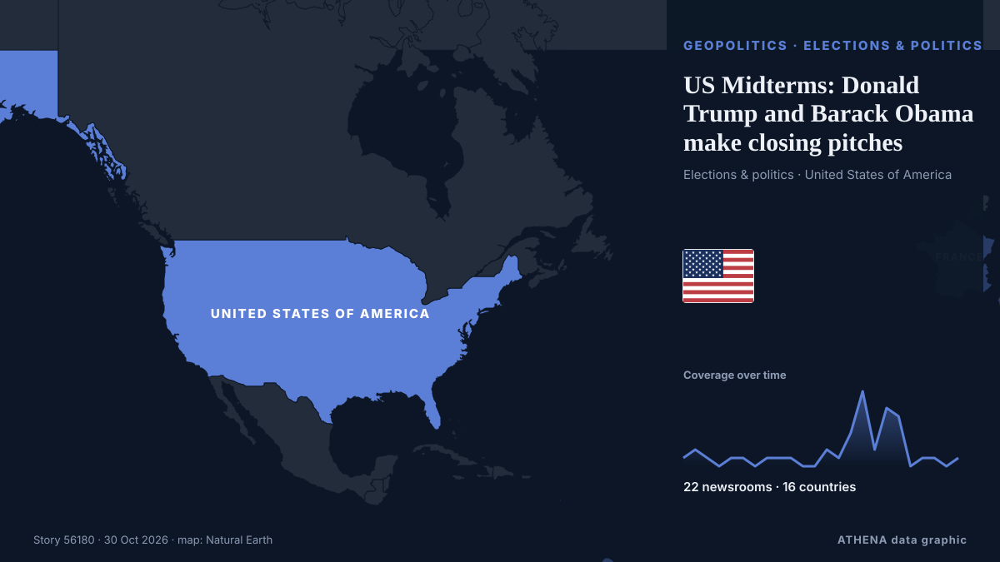

US Midterms: Donald Trump and Barack Obama make closing pitches

In the United States, Democrats are turning to Barack Obama to rally voters ahead of the midterm elections, a crucial test that could shape the remainder of Donald Trump's presidency. από France 24 English
Αναφέρθηκε ανεξάρτητα από 22 μέσα σε 16 χώρες από τις 27 Οκτ, πρώτο από το The Hill· η κάλυψη εξασθενεί. Το ATHENA εκτιμά τον κίνδυνο χαμηλό (1.7/10), κυρίως λόγω της σοβαρότητας της βλάβης που περιγράφεται και της γεωγραφικής και τομεακής εμβέλειάς του. Η βεβαιότητα είναι 90% (υψηλή), καθώς το επιβεβαιώνουν 22 ανεξάρτητα μέσα με μέση αξιοπιστία πηγών 76%.
Γιατί έχει σημασία: Οι εξελίξεις στην ασφάλεια και τη διπλωματία μπορούν να μετατοπίσουν συμμαχίες, εμπόριο και αγορές πολύ πέρα από τις χώρες που εμπλέκονται.
Τι άλλαξε: 27 νέες αναφορές από 17 μέσα στο 24ωρο έως 30 Οκτ.
Πρώτη διατύπωση: Trump, Vance and Obama are making closing stretch appeals to midterm voters in pivotal states
Οι τίτλοι των ειδήσεων παρουσιάζονται στα αγγλικά, όπως δημοσιεύτηκαν.
Με μια ματιά
Επιλέγεται, βαθμολογείται και γράφεται από τη δημοσιευμένη μεθοδολογία του ATHENA. Κανένας συντάκτης δεν παρεμβαίνει σε μεμονωμένα γεγονότα. Πώς παράγεται ›
| 27 Oct 19:01 UTC | 1 |
|---|---|
| 27 Oct 22:01 UTC | 2 |
| 28 Oct 01:01 UTC | 1 |
| 28 Oct 04:01 UTC | 0 |
| 28 Oct 07:01 UTC | 1 |
| 28 Oct 10:01 UTC | 1 |
| 28 Oct 13:01 UTC | 0 |
| 28 Oct 16:01 UTC | 1 |
| 28 Oct 19:01 UTC | 1 |
| 28 Oct 22:01 UTC | 1 |
| 29 Oct 01:01 UTC | 0 |
| 29 Oct 04:01 UTC | 0 |
| 29 Oct 07:01 UTC | 2 |
| 29 Oct 10:01 UTC | 1 |
| 29 Oct 13:01 UTC | 4 |
| 29 Oct 16:01 UTC | 9 |
| 29 Oct 19:01 UTC | 2 |
| 29 Oct 22:01 UTC | 7 |
| 30 Oct 01:01 UTC | 6 |
| 30 Oct 04:01 UTC | 0 |
| 30 Oct 07:01 UTC | 1 |
| 30 Oct 10:01 UTC | 1 |
| 30 Oct 13:01 UTC | 0 |
| 30 Oct 16:01 UTC | 1 |
Γιατί αυτοί οι αριθμοί
Σημασία
Κίνδυνος
Βεβαιότητα
Η κάλυψη — ποιος το ανέφερε και πότε
ο τίτλος όπως δημοσιεύτηκε · ανοίγει το πρωτότυπο- The Hill · Ηνωμένες Πολιτείες · United StatesDCCC pushes for ads targeting GOP on AI, data centers in dozens of key House races
- PBS NewsHour · Ηνωμένες Πολιτείες · United StatesInside Georgia's push to rebuild trust in elections after Trump's false claims
- PBS NewsHour · Ηνωμένες Πολιτείες · United StatesDemocrats put economy and affordability at center of final campaign push
- Euronews English · Γαλλία · FranceWhat do Hispanic voters think about the US midterms?
- CBC News · Καναδάς · CanadaWhy the Hispanic vote could sway the outcome of the U.S. midterm elections
- Egypt Independent · Αίγυπτος · EgyptWhy Trump’s latest election warning is impossible to ignore
- The Canadian Press (via CityNews) · Καναδάς · CanadaTrump, Vance and Obama are making closing stretch appeals to midterm voters in pivotal states
- PBS NewsHour · Ηνωμένες Πολιτείες · United StatesWATCH: Obama blasts Trump for lack of real solutions as he stumps for Ossoff and Bottoms in Georgia
- PBS NewsHour · Ηνωμένες Πολιτείες · United StatesNew polls suggest surprising Democratic gains in red-state Senate races
- NPR · Ηνωμένες Πολιτείες · United StatesMorning news brief
- NPR · Ηνωμένες Πολιτείες · United StatesThese are the House races to watch in the 2026 midterm election on Nov. 3
- The Hill · Ηνωμένες Πολιτείες · United StatesObama adds some zing to Democrats' closing message
- The Independent · Ηνωμένο Βασίλειο · United KingdomObama gets rock star welcome as he campaigns with Democrats in Georgia
- France 24 English · Γαλλία · FranceUS Midterms: Donald Trump and Barack Obama make closing pitches
- The Independent · Ηνωμένο Βασίλειο · United KingdomLiberals applaud Obama’s ‘standup-level funny’ response to Cheesecake-gate and Trump’s overreaction
- The Independent · Ηνωμένο Βασίλειο · United KingdomTrump can’t stop comparing his crowd size to Vance’s, insiders reveal
- The Hill · Ηνωμένες Πολιτείες · United StatesNewsom warns Trump as California deploys election lawyers to battleground districts
- The Independent · Ηνωμένο Βασίλειο · United KingdomTrump cancels final Kansas and Iowa rallies before Election Day — and unloads on reporters asking about it
- The Independent · Ηνωμένο Βασίλειο · United KingdomTrump’s Cheesecake Factory fixation reveals his true weakness in the midterms homestretch
- The Korea Times · Νότια Κορέα · South KoreaSoaring living costs push first-time and returning Korean voters to US midterms
- Sydney Morning Herald · Αυστραλία · AustraliaAt The Cheesecake Factory, a campaign culture war is blissfully ignored
- PBS NewsHour · Ηνωμένες Πολιτείες · United StatesTrump's Justice Department pushes a spate of politically sensitive cases as midterm elections near
- The Hill · Ηνωμένες Πολιτείες · United StatesTrump cancels Kansas midterm rally
- The Daily Star — page reader · Μπανγκλαντές · BangladeshUS MIDTERM ELECTION / Trump, Obama trade barbs on campaign trail
- SABC News · Νότια Αφρική · South AfricaPolling gives Democrats advantage heading into final stretch
- The Canadian Press (via CityNews) · Καναδάς · CanadaJudge presses the Trump administration for details on its campaign to stop noncitizens from voting
- CNA (Channel NewsAsia) · Σιγκαπούρη · SingaporeCNA Explains: Why do the US midterm elections matter?
- New Straits Times · Μαλαισία · MalaysiaTrump scraps last US midterm rallies
- The Straits Times · Σιγκαπούρη · SingaporeTrump cancels weekend rallies, plans to phone in to other midterm campaign events
- RTÉ News · Ιρλανδία · IrelandTrump reinstates rallies in turbulent end to US midterms
- Free Malaysia Today · Μαλαισία · MalaysiaTrump scraps midterm rallies, plans to phone in to other campaign events
- Sydney Morning Herald · Αυστραλία · AustraliaWhat Donald Trump will do after the midterms – lose or lose
- CNA (Channel NewsAsia) · Σιγκαπούρη · SingaporeTrump cancels weekend rallies, plans to phone in to other midterm campaign events
- The Jerusalem Post · Ισραήλ · IsraelTrump cancels weekend rallies, plans to phone in to other midterm campaign events
- CNA (Channel NewsAsia) · Σιγκαπούρη · SingaporeBeyond Trump: US midterms offer early test in battle for White House in 2028
- Times of India · Ινδία · IndiaUS midterms: Trump skips rallies in two red states, takes phone route to rescue GOP
- The Straits Times · Σιγκαπούρη · SingaporeUS Democrats push anti-corruption message in midterm homestretch
- The Straits Times · Σιγκαπούρη · SingaporeHow Trump could interfere in US midterm elections
- New Straits Times · Μαλαισία · MalaysiaHow Trump could interfere in US midterm elections
- Khaama Press · Αφγανιστάν · AfghanistanObama vs. Trump in Georgia: Whose Rally Drew the Bigger Crowd?